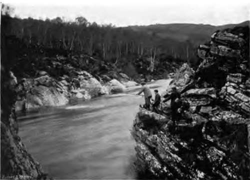
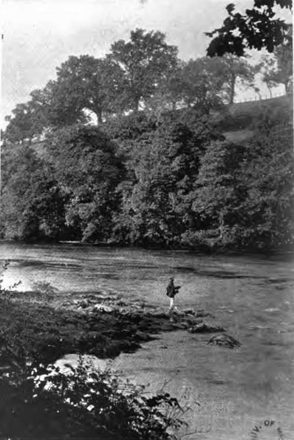

Chapter XXXVI. Fishery Laws
Description
This section is from the book "Fishing", by Horace G. Hutchinson. Also available from Amazon: Fishing.
Chapter XXXVI. Fishery Laws
For some mysterious reason the law on all sporting matters is complicated and difficult of clear statement, but the worst of all is the law of fishing. The number of the Acts of Parliament, the abominable method of legislation by reference which has been so largely used, the various local by-laws which each small fishery board has framed for its district, make up a collection of laws " that pass man's understanding." The difficulty is not lessened by the fact that some laws only apply to some fish, some to others, and that to really understand the fishery laws a certain amount of biological knowledge is required. Thus the Queen's Bench held that every one was bound to know it was illegal to take the young of salmon, but no one was bound to know what fish were the young of salmon.
The best way to deal with the subject will be to state the law which is general, and prevails over all parts of England and Wales, then the law which applies only to particular places.
The general law is of two kinds, that which comes from the common law and that which comes from statute. The common law part is that which gives rise to questions as to the ownership of a right to fish, the statute law defines how the right is to be used.
(A) Common Law Rights
The law regards a river, lake, arm of the sea, or any other water in the same light as it regards land, and applies the same rules of ownership to it. It is only so much land covered by water, the fact that it is so covered makes no difference to the legal incidents which attach to it. There has been some doubt expressed, but it is now settled law that all water, that is, all land covered with water, where the tide docs not regularly ebb and flow, is private property, and the public as such have no legal right over it. Who is the owner is a question that depends on circumstances, but there is an owner, and it is his private property to the exclusion of every one else. The old idea that the fishing in navigable rivers and lakes, and even large ponds, was public has no longer any legal basis. All non-tidal water is private property. It is true the public often fish without any leave and without any interruption, but this is only by the owner's consent; he could, if he liked, stop any of them at any time. They have no right there. In tidal waters it is different. The fact of the water being tidal does not of itself alter the right of ownership ; unless the water is not only tidal but also navigable, then private ownership ceases, and any of the king's subjects have the right to fish in any legal way. This is the general rule, but there are exceptions. Private fisheries exist in navigable tidal waters, but they only do so under "grant charter or immemorial usuage." The reason for this distinction as to fishing rights arises from the ownership of soil and the rights connected with ownership. In all waters not tidal and navigable the soil covered with water belongs to an individual or individuals. It is a rule of law that the public as such can claim no right to take anything from private property, so they cannot take fish which while they are on the owner's land belong to him. But in tidal and navigable rivers the rule is, that the Crown as representing the public is the owner of the soil, and so the public when fishing there are fishing on their own land. This rule depends on a case reported by Lord Coke, which is full of the technical learning of his day. In legal terms it is thus stated, the public cannot acquire by prescription a profit a prendre in alieno solo.
99.- Teed Up On The Rock's Face.
100.- A Spit Of Land Jutting Out Into The River.
The doctrine is far-reaching; it gets rid of the notion that the public can fish in canals, from towing-paths, from boats, from a bridge, from a road.
The rule is positive; the public cannot legally fish as of right in any non-tidal water, and can fish only in such tidal waters as are navigable, and have not been granted to individuals by the Crown by a grant dated before Magna Carta.
Such is the general rule as to fishing rights. A much more difficult question now arises, Who are the owners of private fishing rights? The broad rule is, the owner of the land adjoining the water. If it is a brook or a river the rule is that the brook or river belongs to the owner of the adjoining land as far as his land extends. If he owns both banks then the whole of the brook or river belongs to him as far as his ownership of both banks goes. If he only owns one bank then his ownership only extends to the centre of the stream or river. This rule settles the law as to all streams and rivers, unless both tidal and navigable, and quite independent of the width ; it is a rule of law, and whoever disputes it has to prove the contrary. This may be done, but it rests with the claimant to do it. This rule does not apply to pools and lakes, there it is left to each party to prove what belongs to him and where his boundary goes, just as it would be on any other piece of land. In tidal navigable rivers the whole of the bed of the river from bank to bank belongs to the Crown unless the contrary can be proved.
Fishing rights are divided into three kinds. More has been written, and more confusion has arisen as to the precise definition of these three rights, than can be imagined. The first is called a several fishery; it is the most common form of right, the one possessed by every landowner to keep his fishery several, separate, and apart from every one else. It is a right that implies either that the person who owns it also owns the soil, or that his right has been derived in some way from the owner of the soil. Until the contrary is proved, every owner of a fishery is presumed by law to own a separate or several fishery.
Continue to: